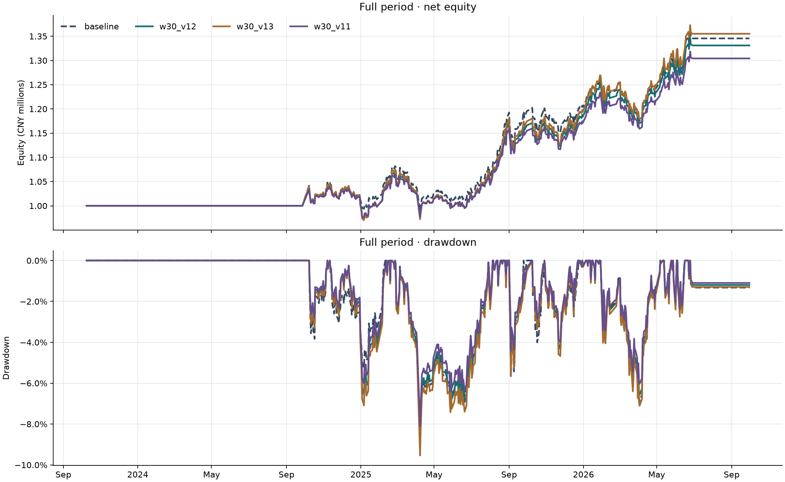

第五轮 · 波动率邻域研究
固定 15 组参数，在四个独立启动的区间内比较；开发和验证结果先确定路径预选，再查看后段及全期。
冻结协议 · 早期预选与路径分组 · 全部审计结果 · 审计验证 · 已选原始工作台基准
预选结果与解释
开发与验证期按逐期相对基准的最小得分改善排序，去除相同净值路径后预选：w30_v12、w30_v13、w30_v11。得分是 CAGR − 0.5 × 最大回撤，最小改善为两个早期区间各自与基准相减后的较小值。负改善仍照实记录。下表同一路径的别名不算独立证据。
原质量门槛在全期通过的配置：baseline、w30_v11、w30_v12、w30_v13、w60_v11、w60_v13、w90_v11、w90_v12、w90_v13、w120_v12、entry50、entry65、exit35、exit50。质量门槛是描述性比较，不是统计显著性检验。后段或全期才看到的优胜配置属于事后探索，不改变预选名单。
| 排序 | 路径代表 | 全部别名 | 开发/验证曲线 SHA256 | 最小改善 | 最小早期 Sharpe | 验证 Sharpe | 预选 |
|---|---|---|---|---|---|---|---|
| 1 | w30_v12 | w30_v12 | 682ece1c8d22424d9d185ada433715d2942bcc2eb9aa3c51ae66f87ee7e1219d, b7be412126f3952632def24e5e389f14b14eaa5f44f38c48df0fcb85336a466d | -0.64% | 0.08 | 1.77 | 预选 |
| 2 | w30_v13 | w30_v13 | 86d0bb3b57f02e04fd6c0b913c367a43fc1cbcf7e4792375c7d9807a4e746b9f, 3d6be6d366a5bea44ddb0e745ecab5d4a9a44d12018529b6a6f2a7aaeeb0fb84 | -0.77% | 0.08 | 1.74 | 预选 |
| 3 | w30_v11 | w30_v11 | 6afd985d4afe22ee1c64187d7e28bd52cdc231f671c2fc1fb7c22c3860179cec, 77389ea1f9cc98ccd1d9426b52260f5f18a7791f6401da1f0a67be259979127c | -0.81% | 0.08 | 1.79 | 预选 |
| 4 | w60_v13 | w60_v13 | dbe569c24009c819cb563a9a7519f7326798ce067fbd0498302779fbb5c8dceb, 3c64424bdff5e534679377626c0381f3b80de5a1cfd7ae27f4adc63c6a6b04ca | -1.32% | 0.22 | 1.58 | — |
| 5 | w60_v11 | w60_v11 | d5335dadc29d810f70462696603c4129deec98c1e203725450d042fb077ad154, 93901e43c26b15267c9cfc0ba1c2ef062a914117be700f59fbda4350e421ac0c | -1.63% | 0.22 | 1.73 | — |
| 6 | w120_v12 | w120_v12 | 23b523fe570f25a92e57d05060f3439b826e2a53c6cfb831721614f4afeba49e, 22681fa93c860cae8cfb890f9ae6c6ee53b374eb9b7898ba7ae7bd2e6cbdfb4a | -2.35% | 0.19 | 1.59 | — |
| 7 | w90_v13 | w90_v13 | 948f4285fc0e9522e1fe77bbf82837939f137b2149aa2a62c0d56e2dd029b29e, bfc9e092eb1070bc7c9d4974f3037242c7b7a8815e2db68c3c35d07147ea0440 | -2.96% | 0.22 | 1.48 | — |
| 8 | w20_v12 | w20_v12 | 84511d8ff468826b1381125fd56efd9bbd207f3d3e54875ebc3a484ed8f3307f, 90a29cebf21c13b776d71db34d9087d93807b11013d4133d56cbb018d270fca9 | -3.93% | -0.34 | 1.52 | — |
| 9 | w90_v12 | w90_v12 | 6e5c41c4abb21ff780b5f42740223f6364b6b5085495fd5c690c8ddde2f63a7c, 80a30025f976acb3f4b35e36c957d377d3f51c8f9699a181d2367eaf0e7da2ba | -4.68% | 0.22 | 1.42 | — |
| 10 | w90_v11 | w90_v11 | 62dc4d799df4a5f50d47a3e6cc803f3d17dff4784da8d3fecbaacf0a329451e8, 1adbdddc184752e8ee8cbc43f53ca525906c1b1ae73891f9bfdd415b156e337b | -5.81% | 0.22 | 1.42 | — |
与基准完全相同的早期路径别名：baseline、entry50、entry65、exit35、exit50。
全期净值和回撤
虚线为基准，实线为早期预选；均为正常成本。

冻结参数
五个字段均来自冻结协议；每组仅改变配置名所示的一项或两项。
| 配置 | 进场宽度 | 退出宽度 | 目标波动率 | 波动率窗口/日 | 目标总仓位 |
|---|---|---|---|---|---|
| baseline | 55.00% | 45.00% | 12.00% | 60 | 80.00% |
| w30_v11 | 55.00% | 45.00% | 11.00% | 30 | 80.00% |
| w30_v12 | 55.00% | 45.00% | 12.00% | 30 | 80.00% |
| w30_v13 | 55.00% | 45.00% | 13.00% | 30 | 80.00% |
| w60_v11 | 55.00% | 45.00% | 11.00% | 60 | 80.00% |
| w60_v13 | 55.00% | 45.00% | 13.00% | 60 | 80.00% |
| w90_v11 | 55.00% | 45.00% | 11.00% | 90 | 80.00% |
| w90_v12 | 55.00% | 45.00% | 12.00% | 90 | 80.00% |
| w90_v13 | 55.00% | 45.00% | 13.00% | 90 | 80.00% |
| w20_v12 | 55.00% | 45.00% | 12.00% | 20 | 80.00% |
| w120_v12 | 55.00% | 45.00% | 12.00% | 120 | 80.00% |
| entry50 | 50.00% | 45.00% | 12.00% | 60 | 80.00% |
| entry65 | 65.00% | 45.00% | 12.00% | 60 | 80.00% |
| exit35 | 55.00% | 35.00% | 12.00% | 60 | 80.00% |
| exit50 | 55.00% | 50.00% | 12.00% | 60 | 80.00% |
全部 15 组配置 · 四个区间
每个表均列出 15 组；Δ 相对该区间的 baseline，Δ CAGR 与 Δ 回撤单位为百分点，正回撤差值表示回撤变大；Δ Sharpe 为绝对差值。*旧质量门槛按全期 CAGR ≥ 8%、最大回撤 ≤ 15%、Sharpe ≥ 0.7 和三个子区间收益均正判定，故四表同一配置的门槛状态相同。
开发段 · 2023-10-09—2024-12-31
| 配置 | 身份 | 区间收益 | CAGR | 最大回撤 | Sharpe | 平均仓位 | 交易成本/元 | Δ CAGR | Δ 回撤 | Δ Sharpe | 旧质量门槛* |
|---|---|---|---|---|---|---|---|---|---|---|---|
| baseline | 基准 | 1.22% | 1.02% | 3.83% | 0.22 | 4.88% | 1,669.44 | +0.00 pp | +0.00 pp | +0.00 | 通过 |
| w30_v11 | 预选 | 0.31% | 0.26% | 3.32% | 0.08 | 4.67% | 1,487.36 | -0.76 pp | -0.51 pp | -0.14 | 通过 |
| w30_v12 | 预选 | 0.32% | 0.27% | 3.62% | 0.08 | 5.09% | 1,597.29 | -0.75 pp | -0.21 pp | -0.14 | 通过 |
| w30_v13 | 预选 | 0.35% | 0.29% | 3.92% | 0.08 | 5.52% | 1,728.79 | -0.73 pp | +0.09 pp | -0.14 | 通过 |
| w60_v11 | — | 1.12% | 0.94% | 3.52% | 0.22 | 4.48% | 1,543.89 | -0.08 pp | -0.31 pp | -0.00 | 通过 |
| w60_v13 | — | 1.31% | 1.09% | 4.14% | 0.22 | 5.29% | 1,789.96 | +0.08 pp | +0.31 pp | +0.00 | 通过 |
| w90_v11 | — | 1.23% | 1.02% | 4.05% | 0.22 | 5.18% | 1,734.75 | +0.01 pp | +0.22 pp | -0.01 | 通过 |
| w90_v12 | — | 1.32% | 1.10% | 4.41% | 0.22 | 5.65% | 1,872.56 | +0.09 pp | +0.58 pp | -0.01 | 通过 |
| w90_v13 | — | 1.43% | 1.19% | 4.77% | 0.22 | 6.12% | 2,010.69 | +0.17 pp | +0.93 pp | -0.01 | 通过 |
| w20_v12 | — | -2.21% | -1.85% | 5.96% | -0.34 | 5.75% | 1,768.79 | -2.86 pp | +2.13 pp | -0.56 | 未通过 |
| w120_v12 | — | 1.20% | 1.00% | 4.70% | 0.19 | 6.18% | 1,971.49 | -0.02 pp | +0.87 pp | -0.03 | 通过 |
| entry50 | — | 1.22% | 1.02% | 3.83% | 0.22 | 4.88% | 1,669.44 | +0.00 pp | +0.00 pp | +0.00 | 通过 |
| entry65 | — | 1.22% | 1.02% | 3.83% | 0.22 | 4.88% | 1,669.44 | +0.00 pp | +0.00 pp | +0.00 | 通过 |
| exit35 | — | 1.22% | 1.02% | 3.83% | 0.22 | 4.88% | 1,669.44 | +0.00 pp | +0.00 pp | +0.00 | 通过 |
| exit50 | — | 1.22% | 1.02% | 3.83% | 0.22 | 4.88% | 1,669.44 | +0.00 pp | +0.00 pp | +0.00 | 通过 |
验证段 · 2025-01-02—2025-12-31
| 配置 | 身份 | 区间收益 | CAGR | 最大回撤 | Sharpe | 平均仓位 | 交易成本/元 | Δ CAGR | Δ 回撤 | Δ Sharpe | 旧质量门槛* |
|---|---|---|---|---|---|---|---|---|---|---|---|
| baseline | 基准 | 20.95% | 21.80% | 8.66% | 1.72 | 44.13% | 8,370.91 | +0.00 pp | +0.00 pp | +0.00 | 通过 |
| w30_v11 | 预选 | 19.91% | 20.72% | 8.11% | 1.79 | 41.94% | 8,313.53 | -1.08 pp | -0.55 pp | +0.06 | 通过 |
| w30_v12 | 预选 | 21.49% | 22.37% | 8.83% | 1.77 | 45.06% | 8,977.98 | +0.57 pp | +0.17 pp | +0.05 | 通过 |
| w30_v13 | 预选 | 22.81% | 23.75% | 9.54% | 1.74 | 48.95% | 8,937.86 | +1.94 pp | +0.88 pp | +0.01 | 通过 |
| w60_v11 | — | 19.05% | 19.82% | 7.95% | 1.73 | 39.68% | 8,100.89 | -1.98 pp | -0.70 pp | +0.00 | 通过 |
| w60_v13 | — | 20.03% | 20.84% | 9.36% | 1.58 | 47.14% | 8,808.33 | -0.96 pp | +0.70 pp | -0.15 | 通过 |
| w90_v11 | — | 14.97% | 15.57% | 7.81% | 1.42 | 37.60% | 7,499.81 | -6.24 pp | -0.85 pp | -0.31 | 通过 |
| w90_v12 | — | 16.39% | 17.04% | 8.50% | 1.42 | 41.00% | 8,113.66 | -4.76 pp | -0.15 pp | -0.31 | 通过 |
| w90_v13 | — | 18.37% | 19.11% | 9.19% | 1.48 | 45.05% | 8,123.74 | -2.69 pp | +0.54 pp | -0.25 | 通过 |
| w20_v12 | — | 19.29% | 20.07% | 11.26% | 1.52 | 45.69% | 9,161.21 | -1.73 pp | +2.60 pp | -0.21 | 未通过 |
| w120_v12 | — | 17.77% | 18.49% | 6.71% | 1.59 | 39.98% | 7,901.13 | -3.32 pp | -1.94 pp | -0.13 | 通过 |
| entry50 | — | 20.95% | 21.80% | 8.66% | 1.72 | 44.13% | 8,370.91 | +0.00 pp | +0.00 pp | +0.00 | 通过 |
| entry65 | — | 20.95% | 21.80% | 8.66% | 1.72 | 44.13% | 8,370.91 | +0.00 pp | +0.00 pp | +0.00 | 通过 |
| exit35 | — | 20.95% | 21.80% | 8.66% | 1.72 | 44.13% | 8,370.91 | +0.00 pp | +0.00 pp | +0.00 | 通过 |
| exit50 | — | 20.95% | 21.80% | 8.66% | 1.72 | 44.13% | 8,370.91 | +0.00 pp | +0.00 pp | +0.00 | 通过 |
后段 · 2026-01-05—2026-09-30
| 配置 | 身份 | 区间收益 | CAGR | 最大回撤 | Sharpe | 平均仓位 | 交易成本/元 | Δ CAGR | Δ 回撤 | Δ Sharpe | 旧质量门槛* |
|---|---|---|---|---|---|---|---|---|---|---|---|
| baseline | 基准 | 8.92% | 12.63% | 6.88% | 1.16 | 24.03% | 3,410.13 | +0.00 pp | +0.00 pp | +0.00 | 通过 |
| w30_v11 | 预选 | 8.29% | 11.72% | 6.03% | 1.16 | 21.81% | 3,266.58 | -0.91 pp | -0.84 pp | +0.01 | 通过 |
| w30_v12 | 预选 | 9.06% | 12.83% | 6.57% | 1.17 | 23.79% | 3,526.46 | +0.20 pp | -0.31 pp | +0.01 | 通过 |
| w30_v13 | 预选 | 9.83% | 13.94% | 7.10% | 1.17 | 25.77% | 3,786.35 | +1.31 pp | +0.22 pp | +0.01 | 通过 |
| w60_v11 | — | 8.17% | 11.56% | 6.31% | 1.16 | 22.03% | 3,158.00 | -1.07 pp | -0.57 pp | -0.00 | 通过 |
| w60_v13 | — | 9.68% | 13.72% | 7.43% | 1.16 | 26.03% | 3,652.34 | +1.09 pp | +0.55 pp | +0.00 | 通过 |
| w90_v11 | — | 9.37% | 13.27% | 5.89% | 1.30 | 21.88% | 3,068.53 | +0.64 pp | -0.99 pp | +0.15 | 通过 |
| w90_v12 | — | 10.24% | 14.53% | 6.41% | 1.31 | 23.86% | 3,312.46 | +1.90 pp | -0.47 pp | +0.15 | 通过 |
| w90_v13 | — | 11.10% | 15.79% | 6.93% | 1.31 | 25.84% | 3,541.14 | +3.16 pp | +0.05 pp | +0.15 | 通过 |
| w20_v12 | — | 8.82% | 12.49% | 6.91% | 1.14 | 23.88% | 3,655.90 | -0.14 pp | +0.03 pp | -0.02 | 未通过 |
| w120_v12 | — | 11.13% | 15.83% | 5.98% | 1.41 | 23.57% | 3,292.84 | +3.20 pp | -0.90 pp | +0.26 | 通过 |
| entry50 | — | 8.92% | 12.63% | 6.88% | 1.16 | 24.03% | 3,410.13 | +0.00 pp | +0.00 pp | +0.00 | 通过 |
| entry65 | — | 8.92% | 12.63% | 6.88% | 1.16 | 24.03% | 3,410.13 | +0.00 pp | +0.00 pp | +0.00 | 通过 |
| exit35 | — | 8.92% | 12.63% | 6.88% | 1.16 | 24.03% | 3,410.13 | +0.00 pp | +0.00 pp | +0.00 | 通过 |
| exit50 | — | 4.36% | 6.13% | 6.88% | 0.64 | 22.60% | 3,337.92 | -6.50 pp | +0.00 pp | -0.52 | 通过 |
全期 · 2023-10-09—2026-09-30
| 配置 | 身份 | 区间收益 | CAGR | 最大回撤 | Sharpe | 平均仓位 | 交易成本/元 | Δ CAGR | Δ 回撤 | Δ Sharpe | 旧质量门槛* |
|---|---|---|---|---|---|---|---|---|---|---|---|
| baseline | 基准 | 34.55% | 10.85% | 8.66% | 1.14 | 23.11% | 13,679.21 | +0.00 pp | +0.00 pp | +0.00 | 通过 |
| w30_v11 | 预选 | 30.42% | 9.66% | 8.11% | 1.11 | 21.79% | 12,975.76 | -1.19 pp | -0.55 pp | -0.03 | 通过 |
| w30_v12 | 预选 | 33.10% | 10.43% | 8.83% | 1.11 | 23.53% | 13,996.94 | -0.42 pp | +0.17 pp | -0.04 | 通过 |
| w30_v13 | 预选 | 35.51% | 11.12% | 9.54% | 1.09 | 25.54% | 14,435.68 | +0.27 pp | +0.88 pp | -0.05 | 通过 |
| w60_v11 | — | 31.29% | 9.91% | 7.95% | 1.14 | 20.92% | 12,998.97 | -0.94 pp | -0.70 pp | -0.00 | 通过 |
| w60_v13 | — | 34.65% | 10.88% | 9.36% | 1.08 | 24.81% | 14,483.59 | +0.03 pp | +0.70 pp | -0.06 | 通过 |
| w90_v11 | — | 27.82% | 8.89% | 7.81% | 1.03 | 20.46% | 12,380.18 | -1.96 pp | -0.85 pp | -0.12 | 通过 |
| w90_v12 | — | 30.59% | 9.71% | 8.50% | 1.03 | 22.32% | 13,413.47 | -1.14 pp | -0.15 pp | -0.12 | 通过 |
| w90_v13 | — | 34.04% | 10.70% | 9.19% | 1.05 | 24.39% | 13,876.30 | -0.15 pp | +0.53 pp | -0.09 | 通过 |
| w20_v12 | — | 26.27% | 8.43% | 12.13% | 0.87 | 24.11% | 14,109.28 | -2.42 pp | +3.48 pp | -0.27 | 未通过 |
| w120_v12 | — | 33.17% | 10.45% | 6.71% | 1.11 | 22.16% | 13,284.81 | -0.40 pp | -1.95 pp | -0.03 | 通过 |
| entry50 | — | 34.55% | 10.85% | 8.66% | 1.14 | 23.11% | 13,679.21 | +0.00 pp | +0.00 pp | +0.00 | 通过 |
| entry65 | — | 34.55% | 10.85% | 8.66% | 1.14 | 23.11% | 13,679.21 | +0.00 pp | +0.00 pp | +0.00 | 通过 |
| exit35 | — | 34.55% | 10.85% | 8.66% | 1.14 | 23.11% | 13,679.21 | +0.00 pp | +0.00 pp | +0.00 | 通过 |
| exit50 | — | 28.92% | 9.22% | 8.66% | 1.00 | 22.75% | 13,601.76 | -1.63 pp | +0.00 pp | -0.14 | 通过 |
双倍交易成本
仅基准与早期预选，在全期和后段分别把佣金率、最低佣金和滑点乘二。Full 收益列为 CAGR，后段为区间收益；收益差以百分点表示，与同区间正常成本比较。
| 配置 | 区间 | 正常收益 | 双倍成本收益 | 收益差 | 双倍成本回撤 | 双倍成本 Sharpe | 平均仓位 | 交易成本/元 |
|---|---|---|---|---|---|---|---|---|
| baseline | 全期 | 10.85% | 10.37% | -0.48 pp | 8.68% | 1.10 | 23.11% | 27,211.82 |
| baseline | 后段 | 8.92% | 8.56% | -0.36 pp | 7.00% | 1.11 | 24.03% | 6,801.59 |
| w30_v12 | 全期 | 10.43% | 9.94% | -0.49 pp | 8.85% | 1.06 | 23.54% | 27,900.54 |
| w30_v12 | 后段 | 9.06% | 8.67% | -0.38 pp | 6.70% | 1.12 | 23.80% | 7,053.71 |
| w30_v13 | 全期 | 11.12% | 10.62% | -0.50 pp | 9.57% | 1.05 | 25.54% | 28,719.51 |
| w30_v13 | 后段 | 9.83% | 9.42% | -0.41 pp | 7.24% | 1.12 | 25.77% | 7,562.50 |
| w30_v11 | 全期 | 9.66% | 9.21% | -0.45 pp | 8.13% | 1.07 | 21.79% | 25,819.50 |
| w30_v11 | 后段 | 8.29% | 7.94% | -0.35 pp | 6.16% | 1.12 | 21.81% | 6,535.94 |
现金重启日期敏感性
每次从标示日期重新以现金和未激活宽度状态运行至 2026-09-30；这不是全期收益拼接，也不是未查看留出样本。Δ 区间收益以百分点表示，相对同起点 baseline。
| 重启日期 | 配置 | 区间收益 | CAGR | 最大回撤 | Sharpe | 平均仓位 | 交易成本/元 | Δ 区间收益 |
|---|---|---|---|---|---|---|---|---|
| 20240701 | baseline | 34.55% | 14.59% | 8.66% | 1.32 | 30.56% | 13,679.21 | +0.00 pp |
| 20240701 | w30_v12 | 33.10% | 14.02% | 8.83% | 1.27 | 31.12% | 13,996.94 | -1.45 pp |
| 20240701 | w30_v13 | 35.51% | 14.97% | 9.54% | 1.25 | 33.78% | 14,435.68 | +0.95 pp |
| 20240701 | w30_v11 | 30.42% | 12.96% | 8.11% | 1.28 | 28.81% | 12,975.76 | -4.13 pp |
| 20250701 | baseline | 30.55% | 24.46% | 6.87% | 1.92 | 34.25% | 8,224.28 | +0.00 pp |
| 20250701 | w30_v12 | 30.80% | 24.66% | 6.57% | 1.99 | 33.00% | 8,520.60 | +0.25 pp |
| 20250701 | w30_v13 | 33.05% | 26.41% | 7.10% | 1.95 | 36.34% | 8,714.19 | +2.50 pp |
| 20250701 | w30_v11 | 28.20% | 22.62% | 6.03% | 2.00 | 30.35% | 7,732.11 | -2.35 pp |
| 20260401 | baseline | 14.34% | 31.02% | 2.42% | 2.97 | 15.35% | 1,670.51 | +0.00 pp |
| 20260401 | w30_v12 | 13.66% | 29.45% | 2.54% | 2.88 | 14.99% | 1,648.92 | -0.68 pp |
| 20260401 | w30_v13 | 14.87% | 32.24% | 2.75% | 2.88 | 16.23% | 1,771.92 | +0.53 pp |
| 20260401 | w30_v11 | 12.47% | 26.73% | 2.33% | 2.88 | 13.75% | 1,526.65 | -1.87 pp |
120 日窗口追加诊断（事后）
在查看完整 80 次主研究结果后，追加 w120_v12 的双倍成本与三个现金重启检查；这组不在开发/验证期冻结的预选名单中，也不改变原有净值图或 80 次审计。验证段得分低于基准（相差 -2.35 pp）。下表呈现收益、回撤与 Sharpe 的取舍，不能据此认定稳健优胜。
| 配置 | 全期 CAGR | 最大回撤 | Sharpe | 平均仓位 | 交易成本/元 |
|---|---|---|---|---|---|
| baseline | 10.85% | 8.66% | 1.14 | 23.11% | 13,679.21 |
| w120_v12 | 10.45% | 6.71% | 1.11 | 22.16% | 13,284.81 |
双倍成本
Full 比较 CAGR，late 比较区间收益；差值单位为百分点。
| 区间 | 配置 | 正常收益 | 双倍成本收益 | 收益差 | 双倍成本回撤 | 双倍成本 Sharpe | 交易成本/元 |
|---|---|---|---|---|---|---|---|
| full | baseline | 10.85% | 10.37% | -0.48 pp | 8.68% | 1.10 | 27,211.82 |
| full | w120_v12 | 10.45% | 9.99% | -0.46 pp | 6.74% | 1.07 | 26,430.91 |
| late | baseline | 8.92% | 8.56% | -0.36 pp | 7.00% | 1.11 | 6,801.59 |
| late | w120_v12 | 11.13% | 10.78% | -0.36 pp | 6.10% | 1.37 | 6,588.95 |
现金重启
每次单独从现金和未激活宽度状态运行；区间收益差相对同起点基准，单位为百分点。
| 重启日期 | 配置 | 区间收益 | CAGR | 最大回撤 | Sharpe | 平均仓位 | Δ 区间收益 |
|---|---|---|---|---|---|---|---|
| 20240701 | baseline | 34.55% | 14.59% | 8.66% | 1.32 | 30.56% | +0.00 pp |
| 20240701 | w120_v12 | 33.17% | 14.05% | 6.71% | 1.28 | 29.30% | -1.38 pp |
| 20250701 | baseline | 30.55% | 24.46% | 6.87% | 1.92 | 34.25% | +0.00 pp |
| 20250701 | w120_v12 | 29.39% | 23.55% | 5.98% | 1.87 | 32.27% | -1.16 pp |
| 20260401 | baseline | 14.34% | 31.02% | 2.42% | 2.97 | 15.35% | +0.00 pp |
| 20260401 | w120_v12 | 15.89% | 34.63% | 2.75% | 2.94 | 16.87% | +1.56 pp |
工作台核验：
13% 目标波动率的路径诊断
冻结验证段的两次内存重跑与原指标字典完全一致。2025-07-11 评估时，w60_v13 已有持仓占净值 80.08%，触发 80.00% 风险上限修复；其新目标约 69.20% 未执行，2025-07-14 的修复改变了再平衡路径。2025-07-15 的 w60_v13 相对基准净值差减少 10,058.90 元。后续路径与费用也影响最终差距，这一事件并非完整因果归因。逐项诊断证据。
研究边界
ETF 历史目录与存续样本选择可能带来幸存者偏差；流动性筛选也使用当前可得资料。供应商价格、复权和公司行为口径尚未得到全历史认证，先前六月五只证券的核对仅是局部抽查。现金利息设为零，投资范围仅为 ETF 股票类资产；每周信号、次日开盘成交、整手及费用假设可能偏离实际。参数搜索和重复路径不会产生独立的样本外证据，也不构成实盘建议。
工作台核验记录
- w30_v12 · full: ac29a81c-7873-47dd-a998-05714ccb75a2
- w30_v12 · late: bac338b4-523a-4bef-b19e-fa08f9dc2fcb
- w30_v13 · full: f63c2d43-da4c-4204-a31c-8268fc26d6c7
- w30_v13 · late: a1a80dda-cf59-4308-9afa-b1c30455e1bf
- w30_v11 · full: 39f08932-0746-4ecb-815d-0d554999d5ce
- w30_v11 · late: 649ac7c7-a498-4c04-8f49-63f181b9d52c